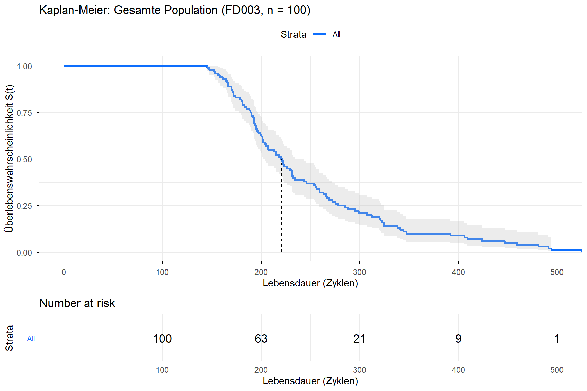

# renv mit absolutem Pfad aktivieren (relativ zur qmd-Datei, nicht root.dir)renv_path <-file.path(dirname(knitr::current_input(dir =TRUE)), "..", "renv", "activate.R")source(renv_path)source("shiny-app/R/data_loader.R")library(tidyverse)library(survival) # Surv(), survfit(), survdiff()library(survminer) # ggsurvplot()library(kableExtra)library(conflicted)conflict_prefer("select", "dplyr")conflict_prefer("filter", "dplyr")source("shiny-app/R/data_loader.R")# Trainingsdaten laden (alle Engines laufen bis zum echten Ausfall → keine Zensierung)train <-load_train_fd003(base_path ="../data/raw/CMaps")cat("Training:", nrow(train), "Zeilen,", n_distinct(train$unit_number), "Engines\n")
Training: 24720 Zeilen, 100 Engines
Training: 24720 Zeilen, 100 Engines
1. Datenvorbereitung: Lebensdauer pro Engine
Für Kaplan-Meier brauchen wir eine Zeile pro Engine mit ihrer Gesamtlebensdauer. Im Trainingsdatensatz ist das der maximale Zyklus der jeweiligen Engine.
Da alle Engines bis zum echten Ausfall beobachtet wurden, ist das Event-Flag für jede Engine 1 (= Ausfall beobachtet, keine Zensierung).
Code
# Eine Zeile pro Engine: Gesamtlebensdauer + Event-Flaglifetimes <- train %>%group_by(unit_number) %>%summarise(lifetime =max(time_in_cycles)) %>%ungroup() %>%mutate(# event = 1: Ausfall beobachtet (kein censoring im Training)event =1L,# Subgruppen basierend auf EDA-Erkenntnis:# Bimodale Verteilung mit Gap zwischen ~350 und ~400 Zyklen# Schwellwert 300 liegt klar zwischen den zwei Clusternfault_group =if_else(lifetime <300, "Kurz (< 300)", "Lang (≥ 300)") )# Übersichtcat("Engines gesamt: ", nrow(lifetimes), "\n")
Engines gesamt: 100
Gruppe 'Kurz (< 300)': 79 Engines
Gruppe 'Lang (≥ 300)': 21 Engines
fault_group
n
min
median
mean
max
sd
Kurz (< 300)
79
152
201
206.1
295
30.5
Lang (≥ 300)
21
301
347
376.8
525
61.2
Interpretation: Die zwei Gruppen unterscheiden sich bereits deskriptiv stark — der Median der langen Gruppe (347 Zyklen) liegt rund 70% höher als der der kurzen Gruppe (201 Zyklen). Das ist ein erster Hinweis auf zwei strukturell verschiedene Subpopulationen. Der Log-Rank-Test in Abschnitt 4 prüft das formal.
2. Kaplan-Meier Schätzer: Gesamte Population
Zunächst schätzen wir die Überlebensfunktion für alle 100 Engines gemeinsam.
Das Surv()-Objekt kodiert für jede Engine: “wie lange hat sie gelebt, und ist sie wirklich ausgefallen?” Die Tilde-1-Notation (~ 1) bedeutet: keine Gruppenaufteilung, eine gemeinsame Kurve.
Code
# Kaplan-Meier für alle Engines (keine Gruppenaufteilung)km_gesamt <-survfit(Surv(lifetime, event) ~1, data = lifetimes)summary(km_gesamt)$table %>%as.data.frame() %>%kable(digits =2,caption ="KM-Gesamtschätzer: Zusammenfassung") %>%kable_styling(bootstrap_options =c("striped", "hover"))
KM-Gesamtschätzer: Zusammenfassung
.
records
100.00
n.max
100.00
n.start
100.00
events
100.00
rmean
247.20
se(rmean)
8.61
median
220.50
0.95LCL
204.00
0.95UCL
234.00
Code
p_gesamt <-ggsurvplot( km_gesamt,data = lifetimes,conf.int =TRUE, # 95%-Konfidenzbandrisk.table =TRUE, # "Number at risk"-Tabelle darunterrisk.table.height =0.25,xlab ="Lebensdauer (Zyklen)",ylab ="Überlebenswahrscheinlichkeit S(t)",title ="Kaplan-Meier: Gesamte Population (FD003, n = 100)",surv.median.line ="hv", # Horizontale/vertikale Linie beim Medianpalette ="#0d6efd",ggtheme =theme_minimal())print(p_gesamt)

Code
# Abbildung speichernpng("reports/figures/km_gesamt.png", width =9, height =7,units ="in", res =150)print(p_gesamt)dev.off()
Die KM-Kurve fällt treppenförmig ab — jede Stufe entspricht einem oder mehreren Ausfällen bei demselben Zyklus.
Das Konfidenzband wird gegen Ende breiter, weil immer weniger Engines beobachtet werden und die Schätzung unsicherer wird.
Die Medianlebensdauer liegt bei 220.5 Zyklen — Hälfte der Engines hat zu diesem Zeitpunkt bereits versagt.
Der unregelmäßige Verlauf deutet auf Heterogenität in der Population hin — die Subgruppenanalyse in Abschnitt 3 deckt das auf.
3. Kaplan-Meier Schätzer: Subgruppen (kurze vs. lange Lebensdauer)
Die bimodale Verteilung aus der EDA legt nahe, dass zwei verschiedene Ausfallmechanismen vorliegen. Wir teilen die Population an der Grenze von 300 Zyklen auf.
Code
# KM nach Fault-Gruppe (Tilde-fault_group → separate Kurve pro Gruppe)km_gruppen <-survfit(Surv(lifetime, event) ~ fault_group, data = lifetimes)# Medianlebensdauern pro Gruppe mit Konfidenzintervallkm_summary <-surv_median(km_gruppen)km_summary %>%kable(digits =1,caption ="Median-Überlebenszeit pro Gruppe (mit 95%-KI)") %>%kable_styling(bootstrap_options =c("striped", "hover"))
if (p_wert <0.001) {cat("→ Hoch signifikant (p < 0.001): H₀ wird verworfen.\n")cat(" Die zwei Gruppen entstammen statistisch verschiedenen Populationen.\n")} elseif (p_wert <0.05) {cat("→ Signifikant (p < 0.05): H₀ wird verworfen.\n")} else {cat("→ Nicht signifikant (p ≥ 0.05): H₀ kann nicht verworfen werden.\n")}
→ Hoch signifikant (p < 0.001): H₀ wird verworfen.
Die zwei Gruppen entstammen statistisch verschiedenen Populationen.
=== Log-Rank-Test Ergebnis ===
Chi-Quadrat-Statistik: 64.62
Freiheitsgrade: 1
p-Wert: 8.88e-16
→ Hoch signifikant (p < 0.001): H₀ wird verworfen.
Die zwei Gruppen entstammen statistisch verschiedenen Populationen.
Code
# Beobachtete vs. erwartete Ausfälle pro Gruppe (Tabellenform)data.frame(Gruppe =names(logrank_test$n),N = logrank_test$n,Beobachtet = logrank_test$obs,Erwartet =round(logrank_test$exp, 2),`Obs/Exp`=round(logrank_test$obs / logrank_test$exp, 2),check.names =FALSE) %>%kable(caption ="Log-Rank-Test: Beobachtete vs. erwartete Ausfälle") %>%kable_styling(bootstrap_options =c("striped", "hover"))
In der kurzen Gruppe treten Ausfälle früher als erwartet auf (Obs/Exp = 1.69), in der langen später (Obs/Exp = 0.39) — genau das Muster bei zwei verschiedenen Ausfallmechanismen.
Einschränkung: Der Schwellwert 300 Zyklen wurde post-hoc aus der EDA abgeleitet — der Test ist exploratorisch, nicht konfirmatorisch.
5. Kumulative Hazard-Funktion (Nelson-Aalen)
Ergänzend zur Überlebensfunktion zeigt die kumulative Hazardfunktion H(t), wie sich das akkumulierte Ausfallrisiko über die Zeit aufbaut. Bei einem konstanten Risiko (Exponentialverteilung) wäre H(t) eine Gerade. Eine konvexe Kurve (wie bei uns zu erwarten) bedeutet steigendes Risiko mit zunehmendem Alter — Verschleißausfall.
Kein echter Zensierungsvorteil: Da alle Training-Engines bis zum Ausfall beobachtet wurden, hätte ein simples Histogramm ähnliche Aussagen geliefert. Der Mehrwert von KM liegt hier im formalen Rahmen und in der Vorbereitung für Cox PH, das Zensierung konsequent nutzt.
Explorativer Schwellwert: Die Grenze von 300 Zyklen wurde post-hoc aus der EDA abgeleitet. Eine unabhängige Validierung (z.B. mit externen Fault-Mode-Labels) wäre für echte Konfirmation nötig.
Nur eine Betriebsbedingung: FD003 hat eine einzige Operating Condition. In FD002/FD004 mit sechs Bedingungen wäre die Subgruppenanalyse komplexer und die Konfundierung schwerer kontrollierbar.
Nächster Schritt:04_survival_weibull.qmd — Weibull AFT-Modell mit Sensor-Covariaten, um den parametrischen Zusammenhang zwischen Sensorzustand und Überlebenszeit zu schätzen.